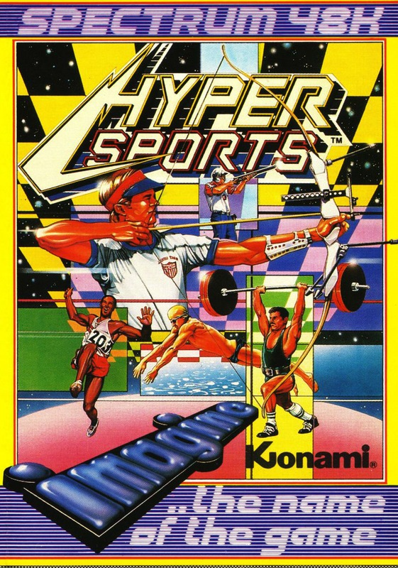
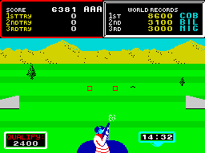
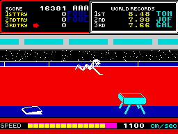

Hyper Sports


{kind=link}

| Publisher: | Imagine |
| Price: | £7.95 |
| Year: | 1985 |
| Source: | CRASH, Issue 19 |

Imagine continue their comeback with what could be called the real follow-up to Daley Thompson’s Decathlon. Hyper Sports is the official Spectrum version of Konami’s arcade game which followed in the footsteps of the highly original Hyper Olympics (or Track and Field as the Taitel/Konami version was called).
To Track and Field fanatics this scenario will seem very similar, but don’t worry! Hyper Sports isn’t just a test of brute strength like its predecessor, but involves timing and skill too. Each event has a qualifying time, distance or target, and to go onto the next event you have to qualify in the preceding one — failure to do so results in the termination of your game. There are six of the original events; swimming, skeet shooting, horse vaulting, archery, triple jump and weight lifting.

When you start a game you are given the familiar letter ‘star’ and you use this to enter your initials. Once you’ve identified yourself, you move onto the events, which commence with swimming. Smash the keyboard (or your joystick) to bits to get speed and when given the prompt, press the jump button to let your man breathe. If you don’t he’ll slow down, and if you press breathe at the wrong time your man will cough and splutter and REALLY slow down.
The swimming is reasonably simple and so is the next event, the skeet (or clay pigeon) shooting. Your man stands at the bottom of the screen with a shotgun while two boxes move up and down the screen, acting as sights. Shoot as many of the skeets that fly over by pressing either the left or right key as one passes through the corresponding sight. If you time your shot correctly then you hit the skeet. You have three separate attempts to qualify, and when you’re successful your man turns, winks and gives you a big grin!
Next, into the gym and onto (or over) the wooden horse. Your man automatically runs up to the horse but you must time his jump onto the springboard correctly, using the jump button, for him to vault. Too soon and you won’t get much of a jump; too late and he will trip up. Time the jump correctly and he will be launched through the air, to land hands first on the horse. When his body is horizontal press fire again and hit the speed buttons as fast as you can to make him somersault. Time the somersault so he lands on his feet otherwise he’ll cartwheel along the floor or bounce on his head, both of which lose points.

After this comes the archery — one of the most difficult of the events. Pressing fire determines wind speed and then a target is winched down the screen which you have to hit. To do this allow for wind speed and let go of the arrow by pressing the jump button. Make sure your angle is as near to five degrees as possible and if you have timed right you will get a bullseye (worth 400 points).
Onto the triple jump now and it’s all hands on the speed buttons. Zoom up to the line and press the jump button, trying to get as near to 45 degrees as possible. Repeat twice for the step and the jump and then wait for the measuring. After three jumps you can progress to the final and the most strenuous round, the weight lifting.
This is a pound-your-Spectrum-keyboard-through-the-floor screen. First select the weight you want to tackle then it’s off on a merry pound that’ll bring tears to your eyes and quite possibly a nasty mess oozing from your Spectrum. Once you start the weightlifting you have to pound away until your man lifts the weight to his chest. When he has done this press jump to ‘snatch’ the weights and pummel away at the key board to keep them above his head. Once that is over you can go to hospital to get an organ transplant and come back to start the series of events again, only this time it’s a lot harder with all the qualifying times upped.
CRITICISM
‘A superb arcade clone with Imagine getting as close to the original as possible within the limits of the Spectrum. All the events represented here are very close to the original, as fans of the game will find out when they try out their arcade tactics. The graphics are excellent with few attribute problems and the colours are well used with nice use of normal and bright. The man is excellently animated as he swims, jumps, and shoots his way through the events. Sound is excellent too, with all the familiar noises of the arcade game which are superbly reproduced. The game itself is very addictive and as strength draining as Daley’s, but this time your reflexes and timing are tested too, giving welcome breaks between bouts of keyboard destruction. A brilliant follow-up to World Series Baseball and one which shows that Imagine are well on their way back to the top.’
‘It’s nice to see the name Imagine associated with good games again. Hyper Olympics, the arcade hit, has now been Spectrumised. This version follows the original really closely, even down to the bird which flies across the screen when you get a maximum on the skeet shooting. Also like the real thing, the game is no piece of cake either. It’s really frustrating having to go back to the start if the odd arrow is a couple of points of a degree out. Never mind, great game, just like the original.’
‘Being a lover of sports simulations, I was very pleased to hear that this great game was to be converted to the Spectrum, but I had doubts about what the quality would be like. I’m pleased to announce that this conversion is excellent. The graphics, of course, aren’t as good as those seen in the arcade game, but with that said they are still pretty good. Hyper Sports is instantly playable due to its simple game style and it is quite addictive, as was DTD. There might not be as many events, but it is definitely a more slick and polished program. If you want a true-to-the-arcade-game copy, then this is the one to get. Another winner from Imagine!’
COMMENTS
| Control keys: | Definable |
| Joystick: | Any |
| Keyboard play: | Very responsive |
| Use of colour: | Brilliant, with nice landscapes |
| Graphics: | Smooth, detailed, well animated with nice scrolling |
| Sound: | Excellent applause, tunes and effects |
| Skill levels: | As you progress qualifying targets get smaller |
| Lives: | 1 |
| Screens: | 6 events |
| General rating: | Excellent arcade conversion, one of the best yet |
| Use of computer: | 89% |
| Graphics: | 90% |
| Playability: | 93% |
| Getting started: | 87% |
| Addictive qualities: | 96% |
| Value for money: | 86% |
| Overall: | 92% |